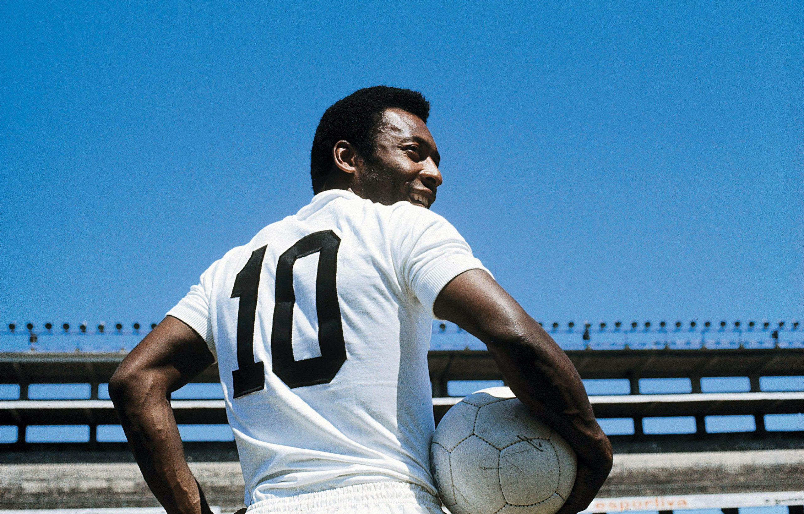
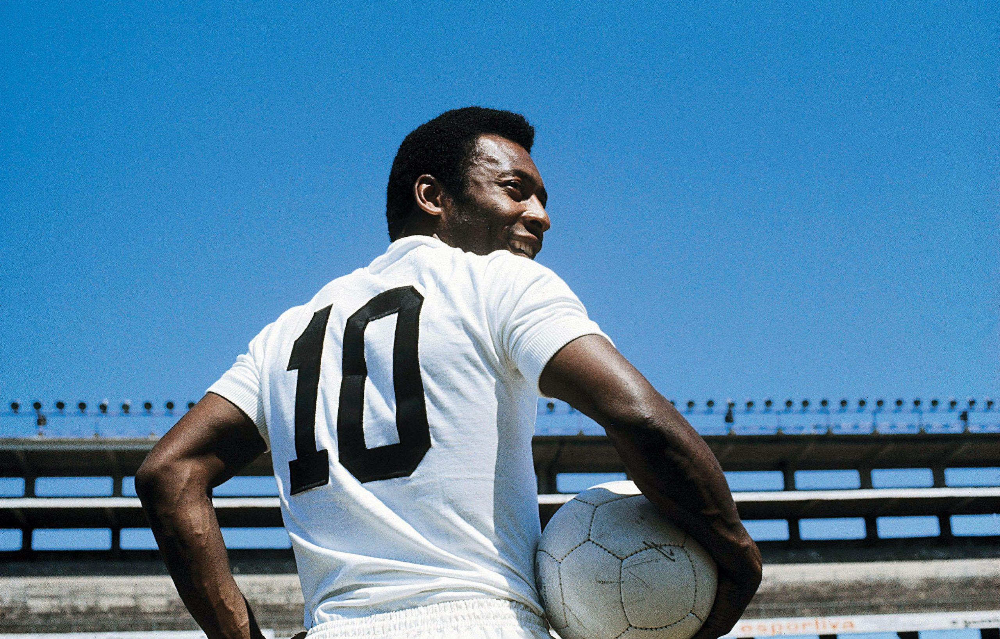

Bem-vindo ao site oficial do Santos Futebol Clube!Bem-vindo ao site oficial do Santos Futebol Clube! Explore nossa história, conheça todas suas grandes conquistas,conheça nossa apaixonada torcida e fique sabendo de tudo que sobre o clube que é sinônimo de paixão e tradição no futebol. Seja parte da nossa jornada e descubra o que faz do Santos FC uma lenda do esporte!
"NASCER, VIVER E NO SANTOS MORRER".
O Santos Futebol Clube foi fundado em 14 de abril de 1912, na cidade de Santos, São Paulo. A reunião de fundação ocorreu na Confeitaria Américo, onde jovens entusiastas do futebol decidiram criar um novo clube. O nome "Santos" foi escolhido em homenagem à cidade.O clube começou a ganhar notoriedade na década de 1930 e, principalmente, após a chegada de Pelé em 1956. Com a ascensão de Pelé, o Santos conquistou diversos títulos importantes, incluindo o Campeonato Paulista e a Copa Libertadores, e ganhou destaque internacional.
Desde sua fundação, o Santos se consolidou como um dos principais clubes do futebol brasileiro, conhecido por sua rica história e por ter produzido e revelado vários jogadores talentosos ao longo dos anos.
"É UM ORGULHO QUE NEM TODOS PODEM TER"
Edson Arantes do Nascimento,conhecido como Pelé nasceu em 23 de outubro de 1940, é um nome sinônimo de futebol e um ídolo eterno do Santos Futebol Clube. Conhecido mundialmente como "O Rei do Futebol", Pelé chegou ao Santos em 1956, aos 15 anos, e rapidamente mostrou seu talento extraordinário.
Durante sua passagem pelo Santos, Pelé conquistou uma série de títulos importantes. Ele venceu o Campeonato Paulista em 1958, 1959, 1960, 1961, 1962 e 1963. Além desses campeonatos regionais, o Santos também ganhou a Copa Libertadores em 1962 e 1963, e a Copa Intercontinental nos mesmos anos, com Pelé sendo fundamental nessas conquistas.Levando o clube a um patamar internacional e se consagrando o Rei do Futebol.
ETERNO REI PELÉ.

A camisa 10 do Santos Futebol Clube é um símbolo de grandeza e legado, imortalizada por Pelé, o maior jogador de todos os tempos. Vestir essa camisa é carregar a responsabilidade e a honra de seguir os passos de um ídolo que transformou o futebol. Desde então, a camisa 10 do Santos é sinônimo de habilidade, criatividade e liderança em campo. Vários jogadores talentosos vestiram este manto, mantendo viva a tradição e a excelência que a camisa representa.A tradição da camisa 10 no Santos é uma parte importante da identidade do clube e carrega um legado de excelência no futebol. Jogadores que vestem esse número são muitas vezes vistos como responsáveis por levar a equipe ao sucesso e são lembrados como ícones do esporte.
.
"SOU ALVINEGRO DA VILA BELMIRO."
A base do Santos Futebol Clube é uma das mais renomadas do Brasil. O clube é conhecido por revelar grandes talentos, como Pelé, Robinho e Neymar. O CT Rei Pelé é o centro de treinamento onde os jovens recebem suporte técnico, físico e psicológico. A tradição do Santos em formar jogadores e promovê-los ao time principal é um dos pilares do sucesso do clube.
"SANTOS SEMPRE SANTOS"
 
